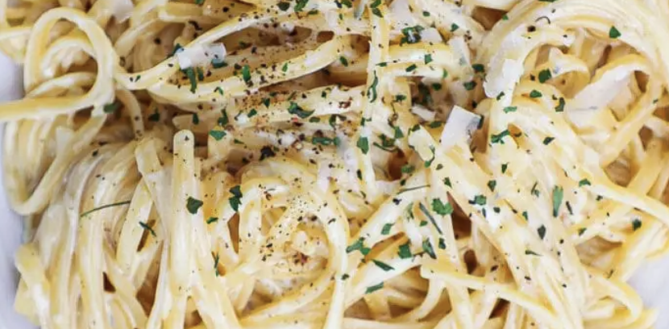

FETTUCCINE ALFREDO
Simpelt & godt
opskrift, jul 13, 2021
Hovedret til 4 Personer
Forberedelse 5 min / Tilberedning 15 min /
I AlT 20 min
Hovedret til 4 Personer
Forberedelse 15 min / Tilberedning 25 min /
I AlT 40 min
- Smelt smør på en stor pande, og tilsæt kylling:kryder efter smag.
- Pres hvidløg og vend det på panden. Tilsæt herefter fløde og mælk samt parmesan.
- Lad simre ved svag varme, og kog Urtekram Fettuccine i let saltet vand. Tilsæt evt. olie
- Vend den færdigkogte fettuccine i saucen, og pynt med frisk timian

INGREDIENSER
| 500 g | Kyllingekød |
| 1 spsk | Smør |
| 1 dl | Fløde |
| 1 dl | mælk |
| 1 fed | Hvidløg |
| 100 g | parmesan |
| 1 spsk | Timian |